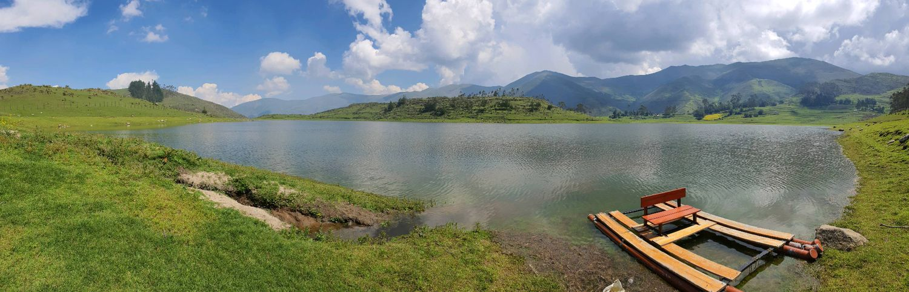

Este mirador tiene una característica, porque alberga un conjunto de extrañas piedras de considerable volumen, alineadas en varias columnas que llegan hasta la Pampa Curahuasina. Esta alineación está presidida por una gigante mole (de ahí su nombre de Capitán Rumi) que estima que pesa unas 120 toneladas.
Esta piedra vista de otro ángulo da la sensación de balancearse precariamente en el gigante abismo de más de 1000 m. al río Apurímac. También es considerada como el mirador menor del Cañón del Apurímac. Desde este punto se puede apreciar claramente el morro de Taramocco, Puente San Francisco, el cerro Añallanca, el camino de herradura a Cachora, la bajada al río Apurímac y las faldas del nevado Salkantay vista panorámica espléndida verde al margen derecho del río.
Se puede llegar por Abancay Curahuasi 7km 1,30 en auto o Curahuasi-Capitán Rumi 5 km 10 minutos en auto.
Saywite forma parte del conjunto arqueológico del nombre antes mencionado, un macizo de piedra que contiene mas de una docenas de figuras fitomorfas, zoomorfas, representa también el medio geográfico: montañas, depresiones, quebradas, ríos, lagunas, flancos y dioses antropomorfos.
Situado en Curahuasi, a una altura de 3500 metros sobre el nivel del mar, en la provincia Abancay departamento de Apurímac, a la altura del kilómetro 45 de la carretera que conduce de Abancay hacia Cuzco.
El famoso piedra de Saywite que esta constituida por figuras talladas en alto relieve que representan símbolos de varios tipos de animales todos relacionados al culto en el antiguo Perú. El megalito está asentada sobre una plataforma de 17 metros de ancho por 34 de largo.
Se sitúa en la margen izquierdo del río Apurímac a una altitud de 1.780 msnm, jurisdicción del distrito de Curahuasi, provincia Abancay.
Existe también mucha vegetación como carrizales y algarrobos en sus alrededores. La palabra Cconoc quizá provenga del vocablo quechua “ccoñec o q'oñec” que traducido al castellano se traduce “caliente”. Antiguamente perteneció a la ex hacienda Carmen perteneciente a una familia de gamonales.
Sus aguas alcanzan temperaturas de 26 ºC y 35 ºC. con un pH de 6,9 y su clasificación está como clorurada-sódica-sulfatada-cálcica. Actualmente viene siendo administrado por la municipalidad distrital de Curahuasi, asimismo el lugar cuenta con hospedaje y restaurante.
Recomendable para curar diversas enfermedades como el artritis, reumatismo, dolores musculares, estrés, de igual manera sus propiedades químicas regula la menstruación y fertiliza a las mujeres.
Es un atractivo que será posicionado en los tours que ofrecen las agencias de turismo. El hermoso paisaje se encuentra ubicado a 78 km al Noreste de la ciudad de Abancay aproximadamente a 2 horas de Cusco e incluye en su circuito, los baños termomedicinales de Cconoc, el Qhapaq Ñan del año 1300, el sitio arqueológico de Saywite con el famoso Monolito, el mismo que es considerado como puerta de ingreso a la ciudad inca de Choquequirao. Este limita con las regiones de Apurímac y Cusco.
El Cañón de Apurímac, es considerado como el más profundo de América y el segundo del mundo con una depresión neta de 3,907 metros, es uno de los lugares que posee una ubicación predilecta, desde el cual se observa su gran belleza paisajística frente al nevado Salkantay y los campos de anisales de la ciudad de Curahuasi.
El mirador de San Cristóbal esta situado en el distrito de Curahuasi, provincia de Abancay y departamento Apurímac; a 3400 metros sobre el nivel del mar. Queda a 1 kilometro de distancia del ya mirador famoso de Capitán Rumi y a 3.5 kilómetros de Qori wayrachina, la misma que se sitúa hacia el sur de Curahuasi.
En el mirador de San Cristóbal se puede realizar diferentes actividades, como la observación de flora y fauna, contemplar el Cañón de Apurímac y además desde el observatorio se divisa los nevados de Padreyoq y Salqantay. Es perfecto para tomar fotografías de paisaje, ya que se combinan muchos elementos que en otro sitios o existe.
Este templo data de la época Colonial, construida el siglo XVII, a base de cal, piedra y adobes, de estilo barroco mestizo, es de una sola nave, en su interior se observan retablos en pan de oro con imágenes religiosas. Presenta una torre exenta del cuerpo de la infraestructura del templo, con una altura de 18 m de altura, edificada a base de piedras con mortero de barro y adobes. En el campanario existen campanas con inscripciones de 1746 y 1810. La fachada conserva su estructura de construcción natural piedra con barro en la parte interior y superior adobe, el techo está cubierta con teja.
Está situado en el distrito de Curahuasi, a una altitud de 3700 metros sobre el nivel del mar. Se puede acceder desde Abancay-Curahuasi- Quiscapampa.
La Plaza de Armas de Curahuasi ubicada en la región Apurímac, provincia de Abancay, distrito de Curahuasi. Es asimismo capital del distrito de Curahuasi. Se encuentra a una altitud de 2.684 msnm. Tiene una población de 1656 habitantes en 1993. Curahuasi es conocido por el anís.1